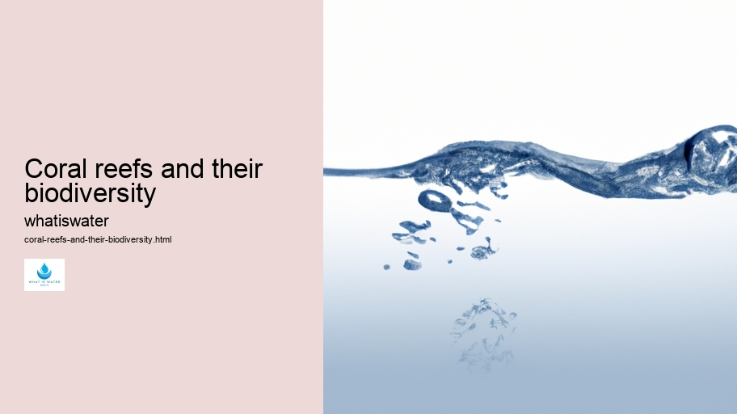

Hydrological Cycle
Hydrological Cycle
Evaporation and transpiration
Condensation and cloud formation
Precipitation and rain patterns
Surface runoff and river systems
Groundwater flow and aquifers
Snowmelt and glacial processes
Water storage in oceans lakes and reservoirs
Soil moisture and infiltration
Water balance and budgeting
Human impact on the hydrological cycle
Marine Ecosystems
Marine Ecosystems
Coral reefs and their biodiversity
Mangrove forests as coastal protectors
Ocean currents and climate regulation
Deepsea habitats and extremophiles
Intertidal zones and estuarine ecosystems
Marine food webs and trophic levels
Freshwater Ecosystems
Freshwater Ecosystems
Conservation efforts for marine species
Marine biogeochemical cycles
Impact of global warming on oceans
Water Resource Management
Water Resource Management
Rivers streams and creeks ecosystems
Lakes ponds wetlands habitats
Biodiversity in freshwater environments
Aquatic plants role in oxygenation
Freshwater fish species diversity
Invasive species impact on freshwater systems
Pollution threats to freshwater sources
Conservation strategies for freshwater biomes
Role of wetlands in flood control
Importance of riparian buffers
Cultural Significance of Water
Cultural Significance of Water
Sustainable water use practices
Desalination technologies for fresh water supply
Wastewater treatment processes
Rainwater harvesting techniques
Management of water during drought conditions
Transboundary water resource politics
Infrastructure for water distribution
Agricultural irrigation efficiency
Urban water demand management
Impact of climate change on water resources
About Us
Contact Us

Coral reefs and their biodiversity
Wetlands
Coral reefs, often referred to as the rainforests of the sea, are some of the most biologically diverse ecosystems on Earth.
Mangrove forests as coastal protectors
.
Water Law and Policy
Despite covering less than 0.1% of the ocean floor, these vibrant underwater landscapes harbor approximately 25% of all marine life. This staggering level of biodiversity not only makes coral reefs a haven for scientists and nature enthusiasts but also underscores their importance in maintaining ecological balance within our oceans.
The incredible diversity found in coral reef ecosystems can be attributed to the intricate relationships between a multitude of species and their surroundings. Coral polyps, tiny creatures related to jellyfish and anemones, are the architects of these environments.
Coral reefs and their biodiversity - Water in Agriculture
Water Softening
Water Conflict
Rain Gardens
Hydrogeology
Hydrology
They form large colonies that slowly produce calcium carbonate skeletons, which over time create vast structures known as coral reefs.
These complex habitats provide shelter, food resources, and breeding grounds for an enormous variety of organisms ranging from microscopic plankton to larger fish and mammals. Among this myriad of species are colorful fish, crustaceans like crabs and shrimp, mollusks such as snails and clams, sea turtles, sharks, rays, and countless other creatures that rely on coral reefs for survival.
Moreover, corals themselves exhibit a fascinating form of symbiosis with photosynthetic algae called zooxanthellae. These algae reside within coral tissues providing them with nutrients through photosynthesis in exchange for protection and access to sunlight—a relationship crucial for the health and growth of coral reefs.
However, despite their robustness in terms of biodiversity, coral reefs face significant threats from human activities including climate change—caused by global warming—and ocean acidification resulting from increased carbon dioxide levels in the atmosphere.
Coral reefs and their biodiversity - Rain Gardens
Water Law and Policy
Wastewater Treatment
Rivers and Lakes
Ocean Conservation
Water Treatment
Water in Culture and Religion
Rain Gardens
Water Conflict
Other pressures include overfishing which disrupts predator-prey dynamics; destructive fishing practices like blast or cyanide fishing; pollution from agricultural runoff containing pesticides or sewage; coastal development; and damage from tourism.
Wetlands
The loss or degradation of these precious ecosystems would have profound implications not just for marine life but also for humanity.
Coral reefs and their biodiversity - Hydrology
Water Conflict
Rain Gardens
Hydrogeology
Hydrology
Water Law and Policy
Wastewater Treatment
Coral reefs protect coastlines from erosion by buffering shorelines against waves storms tides they also support local economies through fisheries tourism providing livelihoods millions people around globe.
To preserve this irreplaceable natural heritage conservation efforts must be intensified at both local global scales reducing greenhouse gas emissions implementing sustainable fishing practices establishing protected areas where no extractive activities allowed promoting responsible tourism education public awareness critical ensuring future generations will continue marvel at beauty complexity contained within world’s magnificent coral reefs their extraordinary biodiversity.
Hydrogeology
Hydrological Cycle
Check our other pages :
Water balance and budgeting
Intertidal zones and estuarine ecosystems
Wastewater treatment processes
Frequently Asked Questions
What are coral reefs and why are they considered biodiversity hotspots?
Coral reefs are diverse underwater ecosystems held together by calcium carbonate structures secreted by corals. They are considered biodiversity hotspots because they support an extraordinary variety of marine life, including thousands of species of fish, invertebrates, and other organisms. Despite covering less than 1% of the ocean floor, coral reefs host around 25% of all marine species, making them some of the most diverse ecosystems on Earth.
How do coral reefs contribute to the health of our oceans and the planet?
Coral reefs play several crucial roles in maintaining the health of our oceans and the planet. Firstly, they provide habitat and shelter for many marine organisms. Secondly, they act as natural barriers that protect coastlines from storm surges and erosion. Thirdly, coral reefs have a role in nutrient recycling in their ecosystems. Additionally, they contribute to carbon and nitrogen fixing and assist with atmospheric regulation. Finally, healthy coral reefs support fishing industries and tourism which can be vital for local economies.
What threats do coral reefs face, and what can be done to protect them?
Coral reefs face multiple threats including climate change-induced warming waters leading to coral bleaching; ocean acidification affecting their calcareous skeletons; overfishing disrupting ecological balance; destructive fishing practices harming their physical structure; pollution from land runoff; and coastal development causing habitat loss. To protect them, efforts must include reducing greenhouse gas emissions globally to combat climate change; implementing sustainable fisheries management; establishing marine protected areas to conserve critical habitats; regulating coastal development; reducing pollution through improved waste management practices on land; promoting responsible tourism; investing in restoration projects where necessary; and conducting ongoing scientific research to better understand reef dynamics under changing environmental conditions.